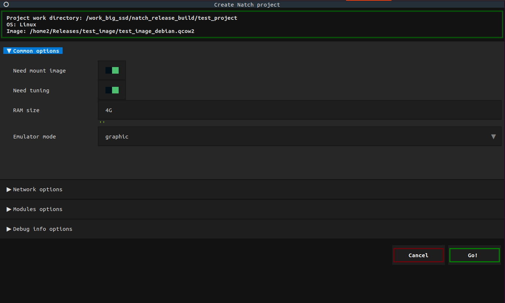

6. Создание проекта
Для использования инструмента следует установить Natch и зависимости (подробнее в разделе Установка и настройка Natch).
Инструмент Natch состоит из нескольких взаимосвязанных частей:
Модифицированный эмулятор QEMU (расширенный механизмами анализа помеченных данных, инструментирования и поддержки плагинов)
Набор плагинов для интроспекции виртуальных машин
Интерес для пользователя представляют последние два пункта. Работа с Natch построена на использовании оберток над
виртуальной машиной и утилитами, чтобы максимально упростить работу с инструментом. Она начинается с команды
natch create, с помощью которой создаются проекты.
Создав проект, вы получите возможность запускать инструмент в режимах записи и воспроизведения (подробнее в разделе
Запись и воспроизведение сценариев), а так же главный конфигурационный файл natch.cfg,
содержащий основные настройки инструмента.
Вообще в Natch используется несколько конфигурационных файлов, ознакомиться с ними можно в разделе
Конфигурационные файлы Natch или по ходу чтения документации.
Как упоминалось выше, работа с объектами оценки в инструменте организована с помощью проектов (рабочих директорий) – отдельных папок, содержащих информацию об объекте оценки, необходимую для работы с ним и последующего анализа.
Проект создается на основе образа исследуемой системы и ряда характеристик. Может быть создан двумя способами: с помощью стандартного интерактивного режима или готового конфигурационного файла. Ниже представлено описание каждого способа.
6.1. Интерактивный режим создания проекта
Командный интерфейс инструмента включает команду natch create, которая предназначена для генерации опций для запуска Natch,
а также для первоначальной настройки инструмента. Команду natch create можно запускать из любого расположения,
все необходимое для дальнейшей работы будет помещено в рабочую директорию, указанную пользователем.
В процессе выполнения команды natch create пользователю потребуется отвечать на вопросы для формирования параметров запуска инструмента.
На выходе будет сгенерирован файл qemu_opts.ini, содержащий опции командной строки для запуска эмлуятора. Командная строка формируется
непосредственно во время выполнения команд, влекущих запуск эмулятора, а именно, natch record, natch replay, natch kvm и natch tuning.
При необходимости внести изменения в командную строку запуска следует отредактировать файл qemu_opts.ini.
Обратите внимание, что некоторые строки начинаются с меток [rr], [record], [replay], [tuning] и [kvm],
это связано с тем, что в режимах тюнинга, записи и воспроизведения командные строки отличаются. Скорее всего,
вы можете не использовать префиксы, но если вдруг, то метки обозначают область применения опций:
[rr]– для командной строки в режимах записи и воспроизведения;[record]– только для режима записи;[replay]– только для режима воспроизведения;[tuning]– только на этапе тюнинга;[kvm]– только для режима аппаратной виртуализации.
Команда natch create имеет ряд параметров, два обязательных, остальные опциональные.
Обязательные параметры:
workdir– название рабочей директории, которая будет создана для проектаimage– путь к образу исследуемой системы
Название рабочей директории – это или просто название папки или полный путь к папке, которая будет создана для хранения всех файлов инструмента.
Если каталог уже существует, будет создан новый с постфиксом _х, где x – это число от 1 до максимально возможного.
Опциональные параметры:
-a/--arch– выбор архитектуры (x86_64, aarch64)-k/--kernel– путь к ядру (опция kernel эмулятора QEMU, если ядро ОС не загружается из образа системы)-o/--os-name– название операционной системы, для которой будет использован инструмент (по умолчанию Linux, предоставляется выбор из следующих вариантов: Linux, FreeBSD, Win8, Win8.1, Win10)-c/--config– путь к конфигурационному файлу, с помощью которого можно автоматически создать проект с заданными характеристиками (подробнее в разделе Создание проекта с помощью конфигурационного файла)--old– текстовая версия мастера создания проекта
Также команду можно запустить с опцией -h и получить справку по доступным опциям.
Описание команды и ее параметров представлено ниже:
usage: Natch create [-h] [-k KERNEL] [-o {Linux,FreeBSD,Win8,Win8.1,Win10}] [-c CONFIG] workdir image
positional arguments:
workdir path to project workdir
image path to image
optional arguments:
-h, --help show this help message and exit
-a {x86_64,aarch64}, --arch {x86_64,aarch64}
emulated architecture
-k KERNEL, --kernel KERNEL
path to kernel
-o {Linux,FreeBSD,Win8,Win8.1,Win10}, --os_name {Linux,FreeBSD,Win7,Win8,Win8.1,Win10}
supporting guest OS
-c CONFIG, --config CONFIG
path to project settings
--old old version of project creation
Пример запуска команды:
natch create <workdir> <image> -o Linux
Среди опциональных параметров команды есть параметр --old, с помощью которого мастер настройки будет
запущен в привычном текстовом формате. С версии Natch 3.4 для создания проекта может быть использован
графический мастер, если хостовая система пользователя имеет графическое окружение.
Главный экран мастера представлен на рисунке ниже.

Ниже подробно описан текстовый способ создания проекта, но он полностью соответствует графическому по наполнению.
Создание проекта проходит в два этапа: на первом пользователю будет задан ряд вопросов, на втором действия будут происходить автоматически. Во время работы может потребоваться пароль администратора (если пользователь разрешит монтирование образа).
Список вопросов, которые будут заданы при выполнении команды:
Количество оперативной памяти
Необходимо указать объем оперативной памяти, выделяемый виртуальной машине. Указывается число в гигабайтах или мегабайтах с соответствующим постфиксом G или M, например 512M.Режим работы эмулятора
Эмулятор может быть запущен в графическом (обычном), текстовом или vnc режиме. По умолчанию режим графический, если же необходимо работать в текстовом или vnx режиме следует дать соответствующий ответ. Для работы в текстовом режиме потребуется дополнительная настройка вашего образа (образ из тестового набора уже настроен).Сетевые опции
В этом меню пользователь может указать порты, которые необходимо пробросить в виртуальную машину. Запрос на ввод портов появится при выборе ответа Y/y или при нажатии клавиши Enter. Кроме того, будет предложено помечать не только Destination ports, но и Source. Если это необходимо, следует выбрать ответ Y/y или нажать клавишу Enter. Порты следует указывать через запятую. На каждый указанный порт будет назначен порт для обращения к машине извне, формироваться они будут следующим образом: первый порт из динамического диапазона для первого пользовательского порта, для остальных путем прибавления единицы. Например, пользователь ввел порты 7777, 8888, получим 49152 и 49153 соответственно.Создание конфигурационного файла для бинарных файлов
Для некоторых сценариев работы с Natch требуется иметь набор исследуемых бинарных файлов как внутри образа, так и снаружи. Модули можно извлечь заранее и передать путь к ним, либо можно указать путь к модулям в гостевой системе, тогда они будут извлечены автоматически (эта опция доступна только если разрешено монтирование образа). Итого, если монтирование разрешено, то необходимо будет выбрать какой путь указать – в хостовой или гостевой системе. Если монтирование запрещено – можно указать только хостовой путь. Если модули не нужны, можно пропустить этот шаг.Получение символьной информации
Далее пользователю предложат скачать отладочные символы для системных библиотек, от которых зависит его приложение, и символы ядра операционной системы. Если отладочные символы нужны (а чаще всего так и есть) то следует нажать Enter, y или Y, в противном случае ввести n или N. В случае если на предыдущем шаге модули не были выбраны, то при согласии на получение отладочной информации, она будет скачана для модулей ядра. С версии 3.2 появилась секция с раширенными настройками получения отладочной информации, где можно указать пути к локальным хранилищам отладочной информации, указать сервера и т.д.Генерация конфигурационного файла для ядерных сущностей
Следующий вопрос касается конфигурационного файла task.cfg. Как правило, следует воспользоваться ответом по умолчанию (Enter, y, Y). Но если во время создания проекта нет возможности подождать генерацию – сделать это можно уже в готовом проекте с помощью командыnatch tuning.
Вопросы закончились, теперь потребуется ввести пароль администратора. Далее будет происходить монтирование образа, удостоверьтесь, что в системе не работают другие виртуальные машины. После чего работа будет выполняться автоматически, это может занять продолжительное время. Это касается ситуации, когда монтирование образа разрешено.
Автоматически будут происходить следующие действия:
Получение отладочных символов
Этап может быть опущен, если пользователь отказался от скачивания отладочной информации. Если нет, то на этом этапе будет произведено сканирование образа, получение файлов из него, а также скачивание отладочных символов разными методами (если один способом не получилось, будет использован другой). Также будут найдены и скачаны символы для интерпретаторов Python, символы для Java, JavaScript и C#.Генерация task.cfg
Сразу после скачивания модулей будет запущен эмулятор с целью получить информацию о смещениях структур ядра, если была указана необходимость генерации. В штатной ситуации эмулятор сам завершит работу и наступит следующий этап. В некоторых случаях эмулятору может не хватить информации для создания конфигурационного файла за время загрузки операционной системы, если ОС загрузилась и долго ничего не происходит, попробуйте повзаимодействовать с системой (авторизоваться, открыть какой-нибудь файл, и т.д.), либо выполнить перезагрузку системы, чтобы самый долгий этап работы системы прошел снова.Извлечение символьной информации
Это последний этап настройки проекта. Будут просканированы все модули и пострена база отладочных символов.
На этом настройка окончена.
Кроме командных строк будет сгенерирована заготовка конфигурационного файла Natch (подробнее в разделе Основной конфигурационный файл natch.cfg).
В полученном файле описаны все возможные секции и поля с примерами заполнения,
часть из которых закомментирована. При необходимости этот файл можно отредактировать (команда natch edit main)
– раскомментировать нужные секции и внести актуальные значения параметров.
Имя конфигурационного файла задается по умолчанию, а именно natch.cfg.
После создания проекта в текущей директории появится еще один файл. Это файл с конфигурацией проекта, речь о котором пойдет в следующем разделе.
6.2. Создание проекта с помощью конфигурационного файла
При создании проекта пользователь отвечает на вопросы скрипта, однако, все они записываются и могут быть переиспользованы в режиме командной строки вместо интерактивного.
Сохранено это все в файле под названием settings_<project_name>.ini, файл располагается в директории, откуда была запущена команда natch create.
Сохраняются настройки и в случае нештатного завершения работы скрипта, например, если что-то пошло не так на этапе генерации task.cfg.
Конфигурационный файл settings_test.ini содержит две секции – Settings и Debug_ext.
Полный набор опций секции Settings выглядит следующим образом:
[Settings]
version = 8
arch = x86_64
mount = True
ram = 4G
emu_mode = graphic
port_forwarding = True
source_ports = True
ports_str = 5555
module_config = True
guest_module_dir = /home/user/Sample2 # host_module_dir
debug_info = True
tuning = True
Некоторые параметры могут отсутствовать, если, например, вы отказались от пробрасывания портов.
Пройдемся по опциям:
version– версия конфигурационного файлаnatch.cfgarch– архитектура гостевой системы (x86_64 или aarch64)mount– разрешено ли монтировать образram– количество выделенной машине оперативной памятиemu_mode– режим работы эмулятора (текстовый, графический или vnc)port_forwarding– необходимость проброса портовsource_ports– необходимость проброса source портовports_str– собственно проброшенные портыmodule_config– необходимость включения модулей в проектguest_module_dir | host_module_dir– путь к директории с модулями в гостевой или хосторой системеdebug_info– необходимость получения отладочной информацииtuning– необходимость генерацииtask.cfg
Если вы хотите создать проект, используя уже готовый конфигурационный файл, но не хотите, например, ждать генерацию task.cfg,
просто установите значение параметра tuning в False.
Секция Debug_ext может быть пустой, если вы отказывались от выбора дополнительных настроек сбора отладочной информации
на этапе создания проекта.
Поля секции частично повторяют конфигурационный файл debug_info.cfg,
описанный в приложении Конфигурационный файл для управления отладочной информацией debug_info.cfg.
Обратите внимание, что не все поля участвуют в файле настроек, а так же в связи с разной структурой этих файлов, иногда
нет прямого соответствия опция – опция, иногда это имя секции – опция, например, в debug_info.cfg есть секция UserFolder,
в то время как в файле настроек будет поле user_folder.
Полный набор возможных опций секции выглядит так:
[Debug_ext]
attempts = 30
debug = False
user_folder = /path/to/dir
kernel = True
python = True
java = True
csharp = True
node = True
servers = server1,server2
pkg_analysis_enable = True
pkg_list_path = /path/fo/file
docker_path = /path
local_podman = /path
root_podman = /path
Значение опций:
attempts– количество попыток получения доступа к интернет-ресурсамdebug– включение диагностических сообщенийuser_folder– путь к пользовательской директории с отладочными символамиkernel– разрешение загрузки символьной информации для ядраpython– разрешение загрузки символьной информации для Python интерпретаторовjava– разрешение загрузки символьной информации для Javacsharp– разрешение загрузки символьной информации для C#node– разрешение загрузки символьной информации для JavaScript (в том числе Node.js)servers– список пользовательских серверов с отлодочными символамиpkg_analysis_enable– включение метода пакетного анализа гостевой операционной системы, если он был для нее реализованpkg_list_path– путь к файлу со списком пакетов, требующих отладочную информациюdocker_path– путь в гостевой системе до директории с Dockerlocal_podman– путь в гостевой системе до директории с rootless Podmanroot_podman– путь в гостевой системе до директории с root Podman
Использовать конфигурационный файл с настройками проекта можно так:
natch create <workdir> <image> -c settings_test.ini
Единственное что попросит у вас скрипт – пароль администратора. Остальная работа будет проделана автоматически.
Предполагается, что как минимум однажды проект был создан с помощью скрипта и файл с настройками появится сам, однако, никто не мешает создать такой файл самостоятельно. Обратить внимание следует только на то, что параметры, связанные с портами и модулями, захватывают по несколько полей.
Если ports_forwarding = False, то поля source_ports и ports_str не нужны.
Если module_config = False, то не нужно указывать поле module_dir.